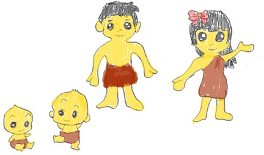
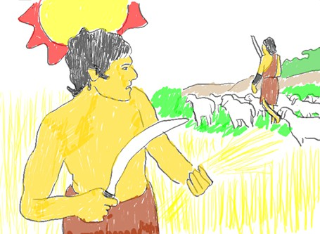
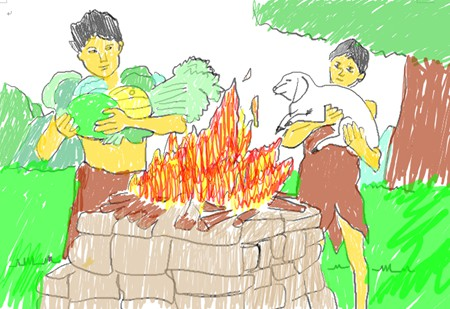
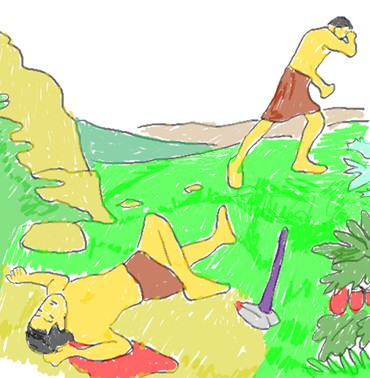
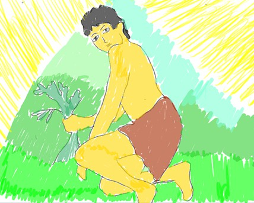
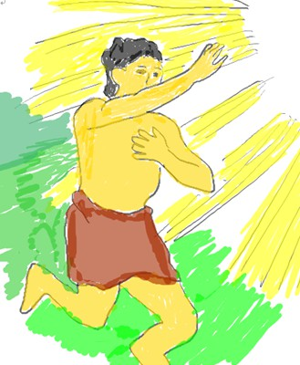

亞當和夏娃離開伊甸園後, 有一天夏娃懷孕, 生了該隱, 而後又生了亞伯. 亞伯是牧羊人而該隱是農夫. 當亞當和夏娃離開伊甸園時, 神用皮衣幫他們做了衣裳, 勢必有告訴他們獻祭的意義, 因為不流血, 罪就不得赦免. 所以, 神教導亞當和夏娃要為自己的罪獻祭, 好使他們不至被棄絕. 不過幾年之後, 該隱和亞伯各自獨立並有自己的事業. 他們依然記得他們父母的教導, 要向神獻祭, 好使他們的罪蒙赦免而不被棄絕.
然而, 該隱似乎忘記若不流血, 罪就不得赦免, 就只有記得要獻祭. 有一天, 該隱從他地裡所出產的農作物, 拿一部分作為祭物獻給神; 亞伯則是從他的羊群中, 獻上頭生的和羊的脂油, 結果神悅納亞伯的, 卻不看中該隱的. 因此, 該隱很不高興, 心懷不平地想, 為什麼神只悅納亞伯的祭物卻沒有悅納他的? 但他沒有進一步去檢討原因, 反而是產生不滿、妒忌和發怒. 該隱實在忍不住這樣的屈辱, 竟對亞伯起了殺機. 因此, 有一天, 該隱就故意騙取亞伯來他的農田中談事情, 而亞伯不疑有他, 就毫無防備的赴約, 結果該隱就找到機會, 將亞伯殺了. (人類有史以來的第一起凶殺命案!)
亞伯含冤而死, 所以他的血在地上控訴該隱. 於是, 神來找該隱, 問他說, 你弟弟呢? 神不是不知道亞伯發生了甚麼事, 神這樣問, 是要給該隱一次機會, 讓他承認自己所犯的, 但他不但不承認, 還說謊說他不知道, 更理直氣壯的頂撞神, 對神說, 我豈需要負責照顧亞伯嗎? 他在哪與我何干? 該隱以為他所做的沒人知道, 但神讓該隱聽地上傳來亞伯對他控告的聲音, 就在這地你留了你兄弟無辜的血. 當神讓他知道亞伯的血在控告他的冤屈後, 神也為此要刑罰他, 但他還是不願認錯, 只在乎自己, 認為神的刑罰對他會造成很大的傷害, 是他無法承擔的. 最後也看到該隱沒有因為神的憐憫, 而記起教訓, 教導後代子孫要敬畏神, 遠離罪. 反而將這罪性傳遞下去.